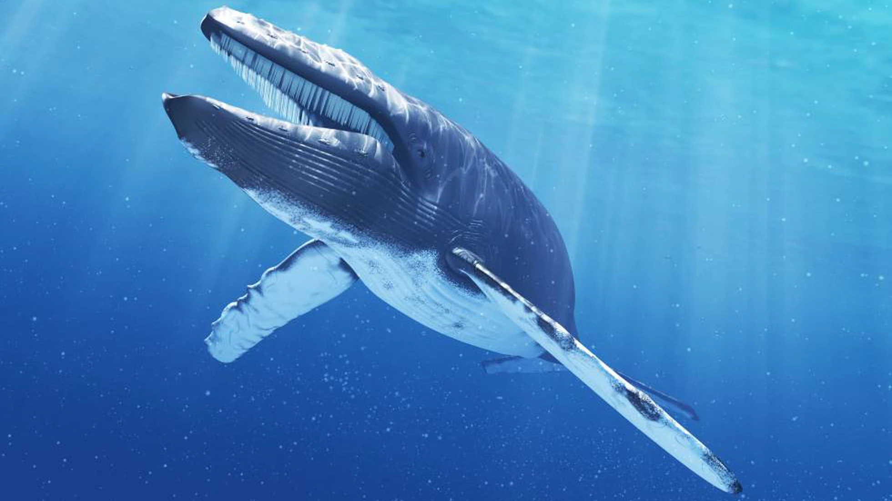

Los balénidos (Balaenidae) son una familia de cetáceos misticetos que incluye cuatro especies, distribuidas en dos géneros, Balaena y Eubalaena. Sin embargo el término ballena es usado en sentido amplio para referirse a todos los grandes cetáceos incluidos en el parvorden Mysticeti (cetáceos con barbas) como el rorcual azul (Balaenoptera musculus) y a varias especies del parvorden Odontoceti (cetáceos dentados), por ejemplo el cachalote (Physeter macrocephalus).
| Ballenas azules | killer whale | sperm whale | fin whale |
|---|---|---|---|
|  |
|
|
|